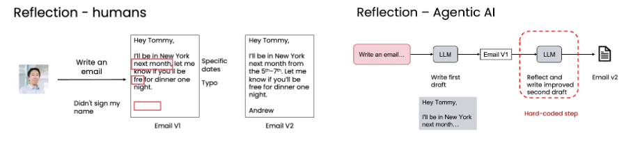

Reflection is simple to add because the workflow is explicit
The engineer decides that the application will draft, review, and rewrite. The model does not have to decide whether reflection should happen. The review can use the same model or a different model chosen for the checking step.

{kind=link}
The lesson begins with familiar edits to an email—clarifying dates, correcting a typo, and adding a signature—then applies the same draft-and-review structure to model outputs such as code.
Reflection is an artifact loop, not a longer prompt
The system creates a first artifact, observes it through a feedback channel, and asks for a second artifact that is conditioned on both the original task and the observation.
That structure is why reflection can help where direct generation stalls. The first model call does not need to be perfect. It needs to produce something concrete enough to inspect: code, a chart image, SQL, an email draft, or another candidate output. The review step then receives explicit criteria. When possible, it also receives external evidence, such as an execution error, rendered image, query result, word count, pattern match, or search result.
The course chart lab makes the boundary visible. The generator returns tagged matplotlib code. Application code extracts and executes it against a prepared dataframe, producing chart_v1.png. The reviewer sees the image and original code, returns a JSON feedback field plus tagged refined code, and the application executes that code into chart_v2.png. The two images are not incidental files; they are the evidence that makes visual reflection possible.
Reflection workflow boundary
C4-style · system context
External person
User instructionTask, data, and quality requirementGenerator model
Draft producerReturns V1 code or contentApplication
Executor / rendererProduces output, image, or errorReviewer model
Critique + revisionReads V1 and observed evidenceApplication result
V2 + feedback + traceRevised artifact and evidence of changeState and control placement
Loads the dataframe or database schema and fixes output paths.
instruction + schemaCreates the first candidate under tagged-output constraints.
context → code_v1Runs the candidate and stores a chart, SQL result, stdout, or error.
code_v1 → evidence_v1Applies named criteria to V1 plus its observed evidence.
task + V1 + evidence → feedback + V2Executes V2 and preserves both versions for comparison.
V2 → evidence_v2External feedback can reveal what self-review cannot see
Reviewing text alone may miss a failure that appears only when the output is used. The course therefore extends reflection with evidence from execution, a checker, a search result, a word counter, or another tool.

{kind=link}
Self-review
Inspect the proposal
The model rereads the draft and looks for issues described in the review prompt.
External feedback
Inspect what happened
The workflow adds information that was not available in the draft alone.
The chart lab lets the reviewer see the rendered artifact
The first local notebook asks for a Q1 coffee-sales comparison between 2024 and 2025. A model writes matplotlib code, the workflow executes it, and a multimodal reviewer receives both the code and chart.
- V1Generate tagged Python. The prompt supplies the dataframe columns and execution constraints.
- RunCreate
chart_v1.png. Execution turns the proposal into a visible artifact. - SeeReview code and image together. The reviewer checks readability, clarity, completeness, labels, colors, and chart choice.
- V2Return structured feedback and revised code. The response is parsed, executed, and rendered as
chart_v2.png.
The SQL lab exposes a plausible query with the wrong meaning
The second local notebook asks which product color has the highest total sales. The event table records sales with negative qty_delta values because inventory leaves the store.
Looks reasonable
The query groups by color and multiplies quantity by price.
Total is negative
The result reveals that the inventory sign was interpreted as sales value.
Correct the sign
The revision uses ABS(qty_delta) or -qty_delta, then runs again.
A text-only reviewer can approve V1 because its syntax and structure look valid. Passing the result dataframe into the reflection step supplies the missing semantic evidence.
The lab is three functions and two execution boundaries
A framework may present reflection as a reusable chain. Underneath, the implementation still needs separate contracts for generation, observation, review, and orchestration.
Generate chart code
def generate_chart_code(
instruction, model, out_path_v1
) -> tagged_python:
prompt = chart_schema + constraints + instruction
return model_call(prompt)- Called by
run_workflow- Reads
- Instruction, dataframe schema, and output-path contract
- Mutates
- Nothing
- Returns
- Python inside execution tags
Reflect on image and regenerate
def reflect_on_image_and_regenerate(
chart_path, instruction, model, code_v1, out_path_v2
) -> (feedback, tagged_python_v2):
image = encode_image(chart_path)
response = review_model(instruction, code_v1, image)
return parse_feedback_and_code(response)- Called by
run_workflowafter V1 exists- Reads
- The instruction, original code, and rendered V1 image
- Mutates
- Nothing directly
- Returns
- Feedback plus independently executable V2 code
Run the reflection workflow
def run_workflow(dataset_path, instruction):
df = load_and_prepare_data(dataset_path)
code_v1 = generate_chart_code(instruction, ...)
chart_v1 = execute_tagged(code_v1, {"df": df})
feedback, code_v2 = reflect_on_image_and_regenerate(
chart_v1, instruction, ..., code_v1
)
chart_v2 = execute_tagged(code_v2, {"df": df})
return {"code_v1": code_v1,
"chart_v1": chart_v1,
"feedback": feedback,
"code_v2": code_v2,
"chart_v2": chart_v2}- Owns
- Fixed sequence and artifact names
- Reads
- Dataset and user instruction
- Mutates
- Writes V1 and V2 chart files through executed code
- Returns
- Every artifact needed to compare the two passes
The SQL lab uses the same shape with different evidence. generate_sql(...) proposes V1. utils.execute_sql(...) creates a result table. refine_sql_external_feedback(...) reviews the question, schema, original query, and actual V1 rows, then returns feedback and V2. run_sql_workflow(...) holds the order together. The key change from self-review is the added df_feedback input: the reviewer can now notice that a syntactically valid query still fails to answer the question.
Failure modes hidden by a “reflect” button
The feedback JSON or execution tags cannot be parsed.
Preserve raw content and fail visibly.
The reviewer receives code but not the chart, result table, or execution error.
Make evidence an input contract.
The review praises style while ignoring the user’s requested comparison.
Repeat task and criteria in the review prompt.
V2 assumes imports, dataframe types, or files that the runtime does not provide.
Restate the runtime contract for every revision.
Reflection adds latency but does not improve the measured result.
Run the same eval before and after.
A worked trace separates critique from improvement
Chart instruction
“Create a plot comparing Q1 coffee sales in 2024 and 2025 using the prepared coffee-sales dataframe.”
| Span | Input | Contract | Output | Mutation |
|---|---|---|---|---|
| 01 | Dataset path | Parse dates; derive integer year and quarter fields | Prepared dataframe df | Source unchanged |
| 02 | Instruction + schema | Return only tagged matplotlib code; save to V1 path | code_v1 | No state change |
| 03 | code_v1 + df | Extract tags; execute; close plot | chart_v1.png or error | Writes V1 image |
| 04 | Instruction + V1 code + V1 image | Return one JSON feedback line plus tagged revised code | Feedback + code_v2 | No direct mutation |
| 05 | code_v2 + same df | Execute under the same data contract | chart_v2.png or error | Writes V2 image |
| 06 | V1, V2, feedback | Apply objective answers or a rubric across an eval set | Comparable scores | Measurement only |
A critique can sound intelligent and still fail to produce a better chart. Improvement becomes an engineering claim only after V2 is rendered and compared under the same task and evaluation. For objective SQL questions, ground-truth answers make that comparison direct. For subjective charts, the course recommends rubric items rather than an unconstrained “which is better?” comparison, because a shared rubric is more consistent and exposes what received credit.
Try it in code
- Run direct generation once and save the unreviewed artifact.
- Write reflection criteria that name the task, not only generic quality.
- Add one external observation: execution error, image, result table, word count, or search evidence.
- Return feedback and V2 as separate parseable fields.
- Execute V2 under the same environment used for V1.
- Evaluate both versions across multiple examples, not one memorable case.
- Change one prompt or model choice, rerun the set, and inspect where the metric moved.
Reflection adds cost, so compare it with a baseline
The lessons evaluate “no reflection” and “with reflection” on the same tasks. For objective tasks such as SQL answers, a dataset can include a ground-truth answer for each prompt. For subjective artifacts such as charts, a structured rubric gives the judge concrete dimensions to score.
Objective dataset
Store prompts and known answers, then compute accuracy for both workflows.
Structured rubric
Score title, labels, chart choice, and axis range rather than asking only which image is better.
Avoid direct comparison
The lessons warn that a judge may favor the first option because of position bias.
Iterate with the metric
Change the generation or reflection prompt, rerun the eval, and keep changes that improve the result.
A useful reflection prompt names the action and criteria
“Make it better” leaves the reviewer without a target. The course recommends a clear review verb—such as check, validate, or critique—and explicit criteria tied to the task.
Vague
“Improve this.”
No quality dimension tells the model what to inspect.
Directed
“Validate the HTML structure.”
The action and criteria focus the second pass on a specific failure mode.
Because reflection takes another model call and can slow the workflow, the final decision should come from the application’s evaluation rather than an assumption that every extra pass helps.
Recall before you move on
Self-check
Why can text-only SQL reflection miss the negative-sales error?
The query is syntactically valid and appears to follow the schema. Its executed negative total reveals the sign convention that the text review missed.
What does the rendered chart add to reflection?
It exposes the actual chart type, labels, colors, readability, and composition for the reviewer to inspect.
How should subjective chart improvement be evaluated?
Use a rubric with explicit dimensions and score each chart, rather than relying only on a direct A-versus-B preference.
Local course authority
This chapter is grounded in the complete local Module 2 learner PDF and both local reflection labs. Function contracts reproduce the notebook interfaces at a compact teaching level; helper boundaries are labeled as decompositions rather than framework APIs. Notebook files are not linked.